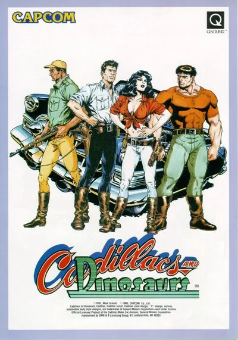

FBA (FinalBurn Alpha)
Cadillacs and Dinosaurs
- Año: 1993
- Desarrollador: Capcom
- Género: Lucha / 2.5D
- Jugadores: 3 jugadores
La historia de Cadillacs and Dinosaurs se inicia con un planeta Tierra fuertemente contaminado y sufriendo una serie de graves desastres naturales que han destruido ciudades y matado a millones de personas. Con el fin de sobrevivir, todos los seres humanos a lo largo del planeta construyen ciudades subterráneas y pronto toda la humanidad se encuentra viviendo en el subsuelo.
Pasan 600 años desde que los humanos construyeron sus ciudades subterráneas y deciden regresar a la superficie. Lo que se encuentran son... ¡dinosaurios! Estas especies extintas han regresado junto con otros monstruos y circulan libremente por la Tierra. Pero esto no desanima a los humanos, que pronto volverán a la superficie.
Los dinosaurios parecen tranquilos y la convivencia con los seres humanos va bastante bien. Pero hay un grupo de humanos llamados "Mercaderes Oscuros"que cazan y matan a los dinosaurios para conseguir dinero. Los dinosaurios se están enfureciendo y han empezado a atacar a todo aquél al que ven ¿Qué está causando esto?
Por lo tanto, Jack Tenrec, Hannah Dundee, Mustapha Cairo y O'Bradovich Mess, dispuestos a atrapar a los "Mercaderes Oscuros" y destruir su banda y a su misterioso líder, Fessenden.1
CONTROLES
En este juego se utiliza un joystick de 8 direcciones y dos botones (ataque y salto). Con estos controles se pueden conseguir bastantes ataques especiales que se ejecutan de igual forma con todos los personajes, aunque su efectividad cambia.
- Ataque 360º. Pulsar ataque y salto al mismo tiempo. El personaje hace un ataque de 360º consiguiendo invulnerabilidad durante unos instantes y golpeando a todos los enemigos cercanos. Como contrapartida la vida del personaje disminuye levemente. - Embestida. Pulsando adelante dos veces (manteniendo la segunda vez) y luego ataque, el personaje puede embestir a uno o varios enemigos. La embestida de Mustapha es particularmente efectiva. - Ataque elevado. Pulsar abajo, luego arriba y luego ataque. El personaje realizará un ataque que golpeará varias veces pero te deja vulnerable frente a los enemigos. A diferencia de la mayoría de beat'em ups de Capcom, no se puede realizar este ataque durante un combo, pero sí mientras se sujeta a un enemigo.
Controles
Dos botones.
| Panel | Juego |
|---|---|
 | Atacar · con arma, disparar · recoger objetos |
 | Saltar |
| + | Saltar girando |
  | Empezar |
 | Meter una moneda |
+  | Salir del juego |
El panel en FBA (FinalBurn Alpha)

Longplay

Partida completa de la recreativa (54 min), de AL82 Retrogaming Longplays: Cadillacs and Dinosaurs Longplay (Arcade) [4K].